Fazendo um mundo mais justo há 10 anos.
Escritório full-service em Governador Valadares — Direito de Família, Trabalhista, Previdenciário, Empresarial e indenizações Samarco/Rio Doce. Atendimento digital ou presencial, com os sócios Elias Siqueira Jr. e Mardson Neves.
Onde o Siqueira & Neves atua por você
Direito de Família e Inventário
Divórcio, guarda, pensão e inventário conduzidos com cuidado nos momentos mais delicados.
Direito Trabalhista
Defesa de direitos trabalhistas, para empregado ou empregador.
Direito Previdenciário
Aposentadoria, desaposentação e benefícios junto ao INSS.
Direito Empresarial e Societário
Assessoria preventiva e estratégica para empresários e sociedades.
Direito do Consumidor
Cobrança indevida, produto com defeito e relações de consumo em geral.
Direito da Saúde e Direito Médico
Questões com planos de saúde e responsabilidade médica.
Direito Imobiliário
Compra, venda, regularização e disputas envolvendo imóveis.
Recuperação de Crédito
Cobrança judicial e extrajudicial de valores devidos.
Direito Bancário
Revisão de contratos e questões com instituições financeiras.
Direito do Trânsito
Suspensão de CNH, multas e infrações de trânsito.
Direito Administrativo
Questões envolvendo servidores públicos e a administração pública.
Indenizações Samarco/Rio Doce
Atuação especializada em pedidos de indenização ligados ao desastre do Rio Doce.
Indenizações Samarco / Rio Doce
Atuamos junto a famílias e trabalhadores da região atingidos pelo desastre do Rio Doce, orientando sobre direito à indenização e acompanhando cada etapa do processo — do cadastro ao recebimento.
Falar sobre meu casoNossos diferenciais
Atendimento personalizado
Proximidade com o cliente, respeitando as peculiaridades de cada caso — não um processo a mais na pilha.
Digital ou presencial
Sede física em Governador Valadares, e atendimento 100% digital pra quem prefere resolver tudo pelo celular.
Equipe especializada
Sócios fundadores com anos de atuação nas mais diversas áreas do direito.
Sócios fundadores
Elias Siqueira Jr.
Advogado com ampla experiência, à frente das estratégias jurídicas do escritório em Governador Valadares.
Mardson Neves
Advogado com ampla experiência, à frente das estratégias jurídicas do escritório em Governador Valadares.
Precisa resolver algo com a Justiça?
Fala agora com o Siqueira & Neves Advogados e entenda, sem compromisso, qual é o melhor caminho pro seu caso.
Falar no WhatsApp